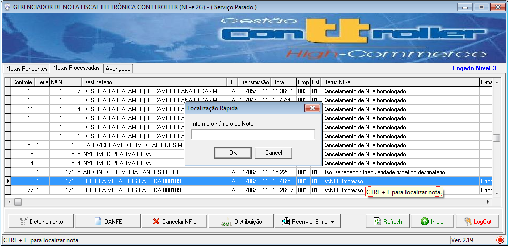
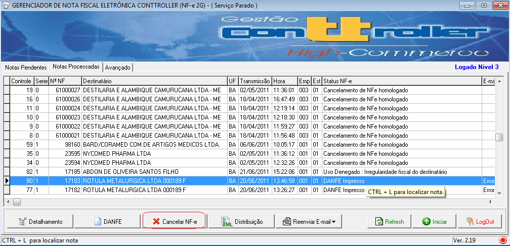
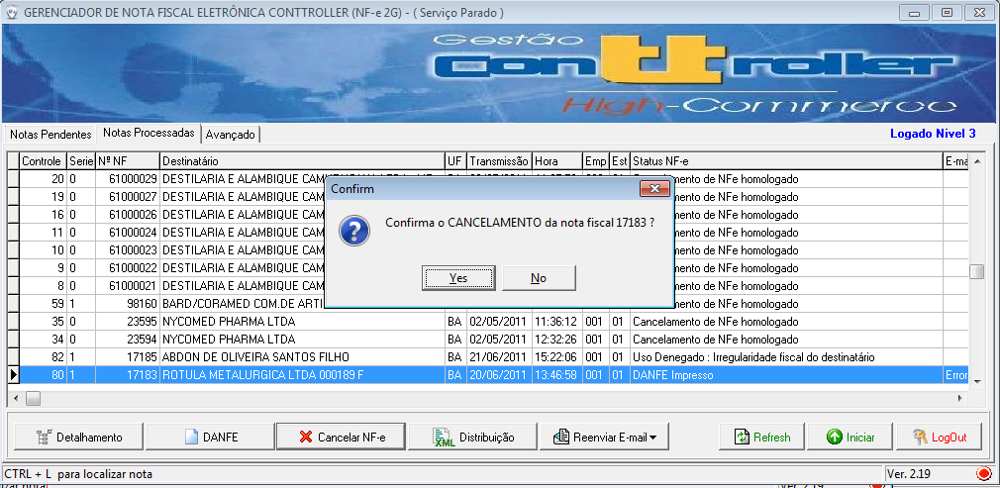
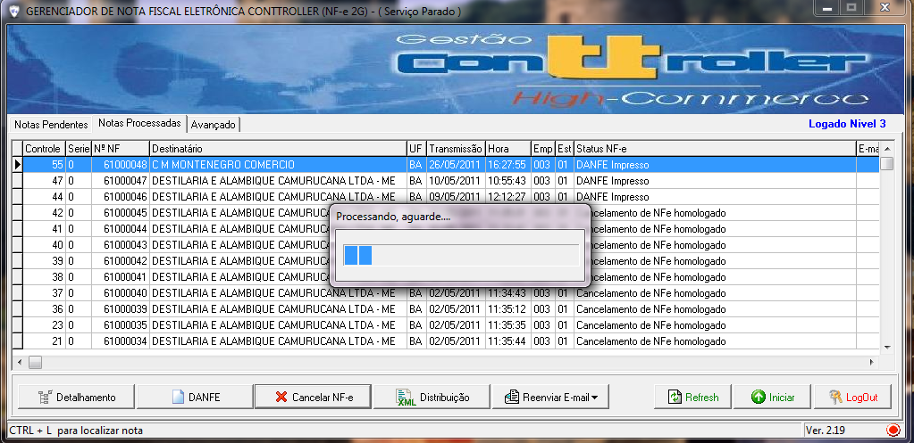

Cancelar |
  
|
Cancelar |
|
Finalidade
Caso tenha havido algum erro de preenchimento na NF-e, e que só tenha sido detectado após a mesma ter sido AUTORIZADA, será possível realizar o seu CANCELAMENTO até o prazo de 168 horas, e a partir de 01/01/2012, esse prazo será reduzido para 24 horas.
O CANCELAMENTO citado acima só poderá ser realizado caso a mercadoria não tenha circulado. Se a mercadoria tiver sido entregue a empresa destinatária, deverá ser providenciada a devolução dos produtos e emitida uma nova NF-e, logicamente, com as informações corretas.
Para cancelar a NF-e, basta selecioná-la no programa e clicar na função “CANCELAR”. O pedido é enviado pela Internet e o mesmo é autorizado eletronicamente.
Condições para Cancelamento
● NF-e autorizada em até 168 horas, desde 22/02/2010 o prazo máximo é de até 2 horas em MT;
● Possuir o número do protocolo de autorização de uso;
● A mercadoria não pode ter circulado;
● A NF-e não pode ter registro de passagem na fiscalização de trânsito;
● A NF-e não pode ter a confirmação de recebimento;
Prazo de cancelamento
Em até 744 horas da autorização de uso da NF-e objeto do cancelamento (PORTARIA 123/2010 prorroga prazo até 01/2012) , no MT o prazo de cancelamento é de 2 horas da autorização de uso.
Em até o prazo de 168 horas, e a partir de 01/01/2012, esse prazo será reduzido para 24 horas
Número do Protocolo de Autorização de Uso
Alguns usuários confundem o número do recibo do envio do lote com o número da autorização de uso e não conseguem cancelar a NF-e.
Cancelando NFe:
1- Localizar a NFe (CTRL + L)
1.1- Digitar o numero da NFe que deseja cancelar

2- Clicar no botão 'CANCELAR NF-e'

03- Clicar em 'SIM' para confirma cancelamento

04- Aguardar confirmação do cancelamento pelo SEFAZ.

A partir da versão 4.00 do Manual de Integração Contribuinte é obrigatório manutenção e distribuição do procCancNFe que é a estrutura XML composta pelo pedido de cancelamento da NF-e e respectiva mensagem da SEFAZ de homologação do cancelamento |
 Dica
Dica